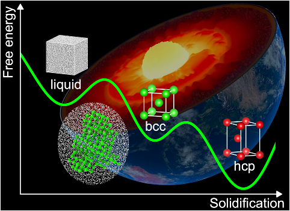
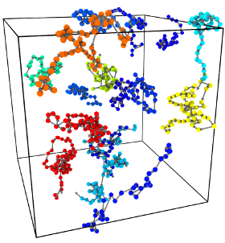
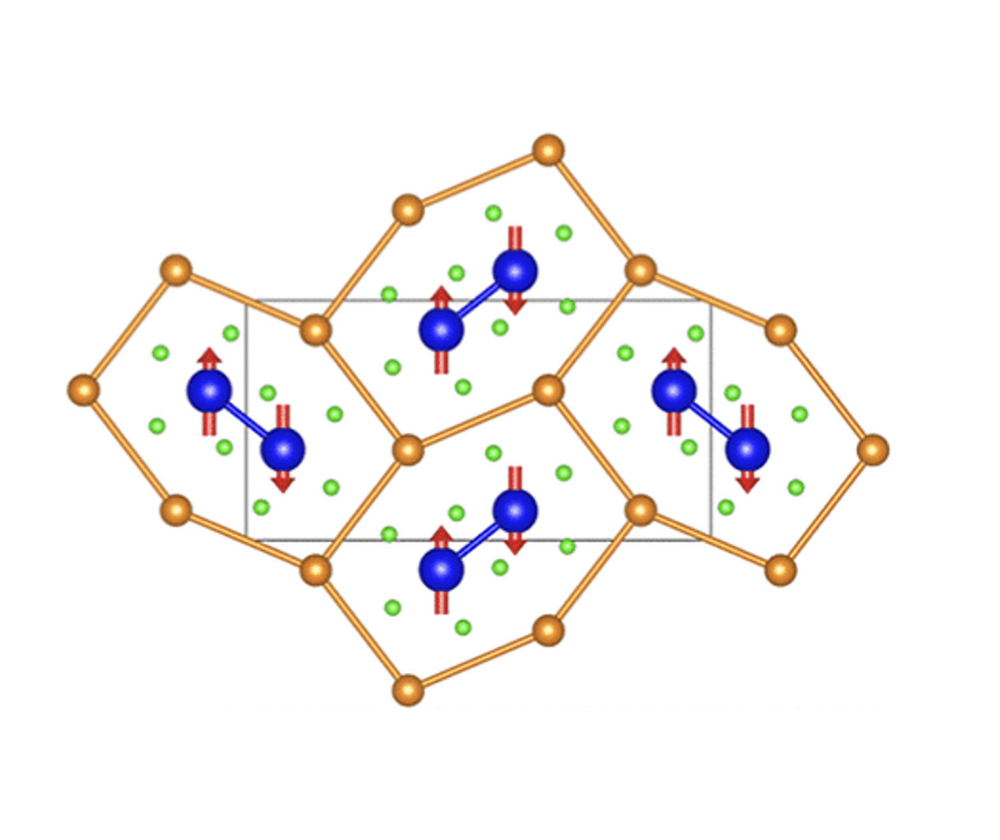

Our research interests include:
- structure and dynamics of planetary interior
- kinetics and thermodynamics simulation algorithms
- computational material discovery and design
Planetary interior: Understanding matters under extreme conditions and their impact on the formation and evolution of planetary interior.

- "Two-step nucleation of the Earth's inner core" PNAS (2022)
- "Iron-rich Fe-O compounds at Earth's core pressures" The Innovation (2023)
- "The Fe-Ni phase diagram and the Earth's inner core structure" Science Advances (2025)
Dynamics simulation: Developing algorithms for accelerated rare-event sampling and thermodynamic calculations of exotic states.

- "Overcoming the Time Limitation in Molecular Dynamics Simulation of Crystal Nucleation: A Persistent-Embryo Approach" Phys. Rev. Lett. (2018)
- "Predicting Complex Relaxation Processes in Metallic Glass" Phys. Rev. Lett. (2019)
- "Ab Initio Superionic-Liquid Phase Diagram of Fe1-xOx under Earth's Inner Core Conditions" Phys. Rev. Lett. (2026)
Material discovery: Computationally searching for stable materials with desired functionality.

- "Prediction of Van Hove singularity systems in ternary borides" npj Comput. Mater. (2023)
- "Accelerated Exploration of Empty Material Compositional Space: Mg-Fe-B Ternary Metal Borides" J. Am. Chem. Soc. (2024)
- "Prediction of Li3Fe8B8 compound with rapid one-dimensional ion diffusion channels" Phys. Rev. Materials (2025)